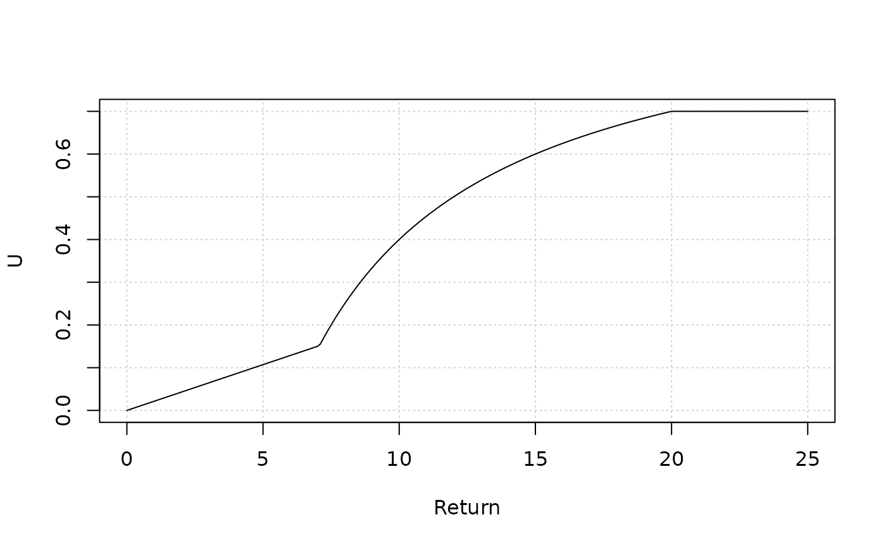
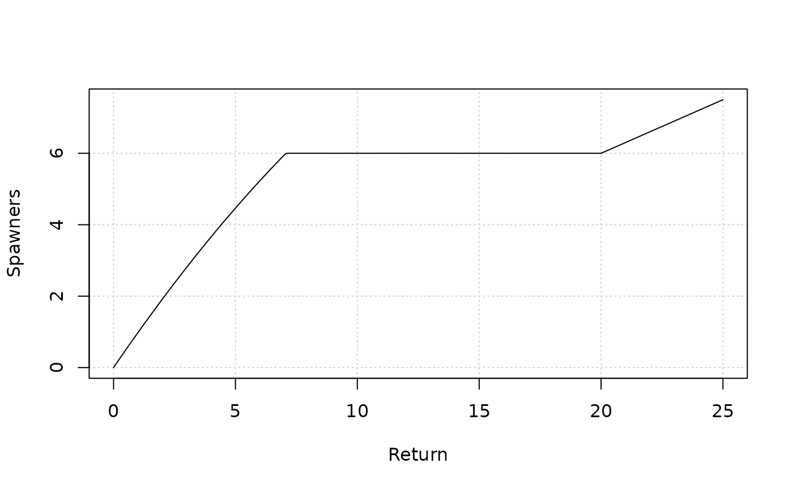
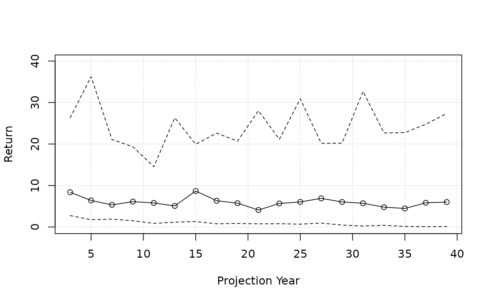
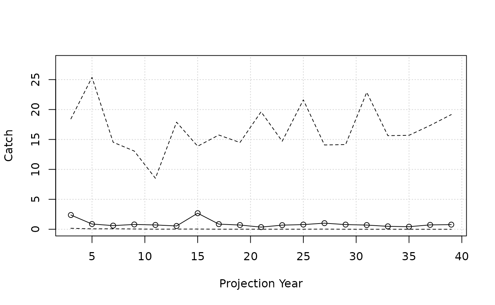
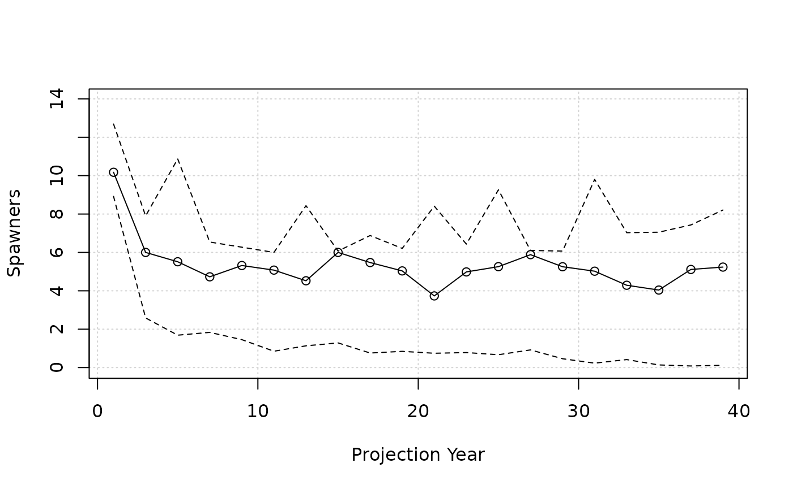
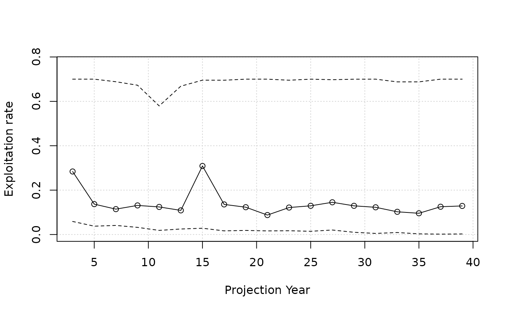

Introduction
One of the classical salmon population models is a Ricker stock-recruit model built from a run reconstruction using a time series of spawner abundance and returns (spawners + catch).
The parameters of the Ricker model are estimated in Bayesian framework.
We then may wish to project the population forward over a number of generations to evaluate the performance of alternative harvest control rules, potentially across alternative states of nature and productivity regimes.
Here, we demonstrate the construction of simple operating model
(class simpleSOM), where the parameters of a Ricker model
are sampled from a statistical distribution, mimicking the joint
posterior distribution from MCMC samples in a fitted model, and then
projected under a harvest control rule.
simpleSOM
A simple operating model (class simpleSOM) was developed
to facilitate the analysis described in the Introduction.
The following assumptions are used:
- Single brood year returns, for example, pink salmon that spawn in odd-numbered years (Glaser et al. 2025)
- Returns are predicted from the spawner abundance of the previous generation
- Catch is solely from the return
- No other life stages are explicitly modeled. Recruitment anomalies, e.g., from a lognormal distribution, of the Ricker model encapsulates variation in juvenile survival during freshwater and marine life stages
- No hatchery production
First, we identify the number of simulations in the projection, then sample:
- the parameters of the stock-recruit function (
ln_alpha,beta) - the variability in the recruitment anomalies
(
sigmaR) - the initial return in the projection, for example, the posterior
distribution estimated in the terminal year of the reconstruction
(
InitReturn)
Typically, we project from a subset of simulations used for the Bayesian MCMC (we demonstrate 25 simulations here):
nsim <- 25
ln_alpha <- rnorm(nsim, 0.81, 0.36)
beta <- EnvStats::rnormTrunc(nsim, 0.069, 0.027, min = 1e-8)
sigmaR <- rnorm(nsim, 0.52, 0.11)
InitReturn <- rlnorm(nsim, log(10), 0.09)Next, we can code up a harvest control rule in an R function that follows the format used in salmonMSE (see article).
This control rule is piece-wise defined (example taken from Glaser et al. 2025):
- At returns below 7 million salmon, the harvest rate decreases linearly from 0.15 towards the origin
- Above 20 million, the maximum harvest rate of 0.7 is prescribed.
- At intermediate returns, the harvest rate is curvilinear and allows for escapement of 6 million
HCR <- function(NO, HO, m) {
Return <- sum(NO, HO)
if (Return <= 7) {
slope <- 0.15/7 * Return
Catch <- slope * Return
} else if (Return > 7 && Return <= 20) {
Catch <- Return - 6
} else {
Catch <- 0.7 * Return
}
U <- Catch/Return
U[Return==0] <- 0
return(U)
}
Return <- seq(0, 25, 0.1)
U <- sapply(Return, HCR, HO = 0)
plot(Return, U, type = "l", panel.first = grid())

Once these components are defined, the simpleSOM object
can be created.
We simulate a salmon that returns every 2 years for 20 generations,
then do the projection with a call using
simple_salmonMSE():
library(salmonMSE)
simpleSOM <- new(
"simpleSOM",
maxage = 2,
nsim = nsim,
ngen = 20,
kappa = exp(ln_alpha),
Smax = 1/beta,
sigmaR = sigmaR,
type_T = "u",
u_terminal = HCR,
InitReturn = InitReturn
)
SMSE <- simple_salmonMSE(simpleSOM)The output is a complete object SMSE, a subset of slots
are relevant for calculating performance metrics:
# Probability of exceeding 80 percent SMSY during the entire projection
P_SMSY80(SMSE)
#> [1] 0.2991632
# Probability of exceeding Sgen
P_Sgen100(SMSE)
#> [1] 0.4037657
plot_statevar_ts(SMSE, "Return_NOS", quant = TRUE, ylab = "Return")
plot_statevar_ts(SMSE, "KT_NOS", quant = TRUE, ylab = "Catch")
plot_statevar_ts(SMSE, "NOS", quant = TRUE, ylab = "Spawners")
plot_statevar_ts(SMSE, "UT_NOS", quant = TRUE, ylab = "Exploitation rate")